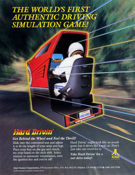
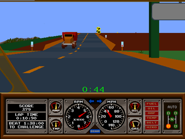

Hard Drivin'
The arcade machine that strapped a real DC motor to your steering wheel — and hid a Milliken-level vehicle physics model inside

Overview
Hard Drivin' was a 1989 arcade driving simulation that represented a triple convergence of HCI firsts: the first commercially released arcade game with continuous force-feedback steering, the first consumer-facing application of real automotive vehicle dynamics equations, and one of the earliest arcade games rendered in filled 3D polygons. The player sat in an adjustable bucket seat with a full manual transmission — ignition key, H-pattern 4-speed shifter, clutch/brake/gas pedals, and a steering wheel powered by a brushed 60-90V DC motor that actively fought the driver based on simulated road forces, cornering, and collisions.
The car physics model was developed by Doug Milliken, son of William F. Milliken Jr. — the Cornell Aeronautical Laboratory engineer who converted aircraft equations of motion into automobile dynamics equations in the 1950s and literally wrote the canonical textbook Race Car Vehicle Dynamics. Atari was so protective of this secret that they listed Milliken in the game's credits as a mere "test driver." 3,318 cabinets were manufactured across cockpit and upright variants, selling for $7,995. The sequel Race Drivin' (1990) upgraded to a proper four-wheel physics model using an AT&T DSP32C. Every modern force-feedback racing peripheral — from the Microsoft SideWinder Force Feedback Pro to today's direct-drive sim racing wheels — traces its commercial lineage to this cabinet.
Deep dive
Development began in the mid-1980s when Atari Games was still owned by Namco. The two companies collaborated on a 3D arcade hardware prototype, then split to develop separate forks. Project leader Rick Moncrief oversaw a team including hardware designer Jed Margolin, physics programmer Max Behensky, and game programmer Stephanie Mott. The project was nearly cancelled when an Atari VP claimed nobody would buy a $10,000 arcade cabinet, but weeks of market research proved the price acceptable.
Atari hired Doug Milliken as a consultant to develop the car model using real vehicle dynamics. Doug and his father William had literally written the book on car dynamics. Atari hid Doug's true role by listing him in the credits as a "test driver." Jed Margolin later explained: "Atari didn't want anyone to know we were doing real car modeling." The model described engine, transmission, springs, shock absorbers, and tires — how they react to each other, to the road, and crucially, the forces transmitted back through the steering wheel. A key limitation: the TMS34010 processor running the physics had no floating-point unit, so Behensky could only model two wheels, dynamically switching modes depending on speed.
The force-feedback motor was a brushed DC motor by Ohio Electric Motors (60-90 VDC) with an opto-isolated motor amp. Safety features included a thermal protector and redundant 12-bit/8-bit ADCs monitoring motor position. A remarkable detail: the adjustable seat position sensor scaled force-feedback strength — seat forward (shorter/younger player) meant less force; seat back (taller/adult) meant more. Unlike earlier arcade cabinets that merely vibrated on collision (TX-1, 1983), Hard Drivin' provided continuous variable resistance based on simulated physics.
The cabinet ran six processors: main CPU (Motorola 68010, 8 MHz) for game logic; two TI TMS34010 processors for graphics and physics (Model Signal Processor, ~6 MHz); an ADSP-2100 math co-processor; and separate 68000/TMS32010 for audio. Jed Margolin pulled a memory trick: by pairing 32 VRAMs into 16 banks of 64Kx8 and telling the TMS34010 there was only 1 bit per pixel, the system could fill 16 pixels per operation. He called the custom gate array (designed by Don Paauw) the "34012" — a fake TI part number to mislead hardware pirates.
3,318 cabinets were manufactured (1,868 cockpits). Commodore User wrote: "Atari can be proud of themselves for producing a coin-op which really does put you in the driving seat — undeniably a major first." Home ports stripped the force feedback entirely, making the arcade hardware the only authentic experience. Jed Margolin later donated his personal Race Drivin' cabinet to The Strong Museum of Play. The project yielded three US patents (moving dashboard, driver training, multi-player competition) and spawned the San Francisco Rush series, establishing a lineage from 1989 arcade physics to modern sim racing — Gran Turismo, iRacing, and every force-feedback wheel used today.
Team & pioneers
- Rick Moncrief Project leader, game designer, sound system, mechanical design, force shifter, analog hardware.
- Max Behensky Software design, car physics model in C, force-feedback steering implementation.
- Stephanie Mott Game programming, display software, championship lap.
- Jed Margolin Hardware design, self-test, instant replay, integer 3D rendering, video memory architecture.
- Doug Milliken Vehicle dynamics consultant (credited as "test driver" to conceal real vehicle modeling).
- Erik Durfey Technician, mechanical designer, sound recording, dashboard gauge implementation.
- Don Paauw Custom gate array design (the fake "34012" chip).
- Jim Morris Display math software.
- Publisher Atari Games (NA), Namco (Japan). 3,318 units manufactured.
Media
